注记Work-in-progress 🚧
You are reading the work-in-progress first edition of Causal Inference in R. This chapter has its foundations written but is still undergoing changes.
Causal estimands · 原书逐章中译
来源：Malcolm Barrett、Lucy D’Agostino McGowan、Travis Gerke，Causal Inference in R · Causal estimands。 本页为中文翻译；原书代码块、公式、图表交叉引用和引用键均按原文保留。统计图在网页渲染时由 R 代码生成，静态插图直接引用原文件。 原书仓库采用 CC BY-NC-SA 4.0；代码采用 MIT 许可。请遵守原许可证并注明作者。
You are reading the work-in-progress first edition of Causal Inference in R. This chapter has its foundations written but is still undergoing changes.
在进行因果分析、做出因果推断时，我们需要始终牢记自己感兴趣的因果问题。 因果问题不仅有助于指导我们需要作出的假设，也有助于决定如何回答这个问题。 本章讨论与回答因果问题密切相关的三个概念：估计目标、估计量和估计值。 估计目标是我们感兴趣的目标，估计量是利用数据近似这一估计目标的方法，而估计值是将数据代入估计量后得到的数值。 可以把估计目标想象成我们试图烘焙的一块漂亮蛋糕的精美照片，把估计量想象成食谱，把估计值想象成从烤箱里取出的蛋糕。
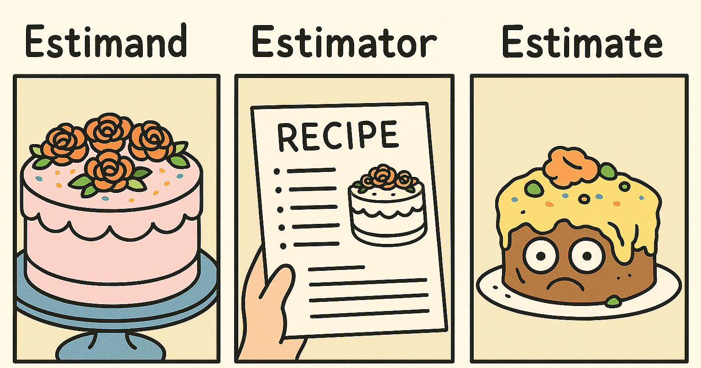
到目前为止，我们主要关注平均处理效应，即在整个总体中取平均的感兴趣暴露的效应。 这里的估计目标是所有个体潜在结局之差的期望值：
\[ E[Y(1) - Y(0)] \]
我们使用的估计量取决于所选择的方法。 例如，在 A/B 测试或随机对照试验中，我们的估计量可以是接受暴露 A 者的平均结局减去接受暴露 B 者的平均结局。
\[ \sum_{i=1}^{N}\frac{Y_i\times X_i}{N_{\textrm{A}}} - \frac{Y_i\times (1-X_i)}{N_{\textrm{B}}} \]
其中，\(X\) 是暴露 A 的指示变量（暴露 A 时 \(X = 1\)，暴露 B 时 \(X = 0\)），\(N_A\) 是 A 组总人数，\(N_B\) 是 B 组总人数，且 \(N_A + N_B = N\)。 让我们进一步说明这个例子。 假设我们有两种不同的行动号召设计（通常简称 CTA，即营销活动中的书面指令），想评估它们是否会导致用户购买商品的平均数量不同。 我们可以进行 A/B 测试，随机分配一部分用户查看设计 A 或设计 B。 假设我们有一个名为 ab、包含 100 名参与者的 A/B 测试数据集。 下面是模拟这类数据集的代码。
set.seed(928)
ab <- tibble(
# generate the exposure, x, from a binomial distribution
# with the probability exposure A of 0.5
x = rbinom(100, 1, 0.5),
# generate the "true" average treatment effect of 1
# we use rnorm(100) to add the random error term that is normally
# distributed with a mean of 0 and a standard deviation of 1
y = x + rnorm(100)
)这里，暴露是 x，结局是 y。 真正的平均处理效应是 1，这意味着平均而言，看到行动号召 A 会使购买商品的数量增加 1。
ab# A tibble: 100 x 2
x y
<int> <dbl>
1 0 -0.280
2 1 1.87
3 1 1.36
4 0 -0.208
5 0 1.13
6 1 0.352
7 1 -0.148
8 1 2.08
9 0 2.09
10 0 -1.41
# i 90 more rows下面给出两种在 R 中估计它的方法。 使用公式方法，我们在第一个例子中计算 y 在不同暴露值之间的差异。
ab |>
summarize(
n_a = sum(x),
n_b = sum(1 - x),
estimate = sum(
(y * x) / n_a - y * (1 - x) / n_b
)
)# A tibble: 1 x 3
n_a n_b estimate
<int> <dbl> <dbl>
1 54 46 1.15或者，我们可以按 x 使用 group_by() 分组，对每组的 y 均值使用 summarize() 汇总，然后将结果进行 pivot，以求二者之差。
ab |>
group_by(x) |>
summarize(avg_y = mean(y)) |>
pivot_wider(
names_from = x,
values_from = avg_y,
names_prefix = "x_"
) |>
summarize(estimate = x_1 - x_0)# A tibble: 1 x 1
estimate
<dbl>
1 1.15因为 \(X\)（即暴露）是随机分配的，所以该估计量会为我们感兴趣的估计目标给出无偏估计值。
不过，无偏是什么意思？ 请注意，虽然“真正的”因果效应是 1，但这个估计值并不精确等于 1；它是 1.149。 为什么会有差异？ 这项 A/B 测试包含的是 100 名参与者的样本，而不是整个总体。 随着样本量增加，估计值会越来越接近真实值。 让我们试试看。 我们再次模拟数据，但把样本量从 100 增加到 100,000：
set.seed(928)
ab <- tibble(
x = rbinom(100000, 1, 0.5),
y = x + rnorm(100000)
)
ab |>
summarize(
n_a = sum(x),
n_b = sum(1 - x),
estimate = sum(
(y * x) / n_a - y * (1 - x) / n_b
)
)# A tibble: 1 x 3
n_a n_b estimate
<int> <dbl> <dbl>
1 49918 50082 1.01请注意，估计值是 1.01，比实际平均处理效应 1 接近得多。
假设 \(X\) 并不是随机分配的。 在这种情况下，我们可以利用暴露前协变量来估计 \(X\) 的条件概率（倾向评分），并将该概率纳入一个权重 \((w_i)\) 中，以估计这一因果效应。 我们可以将无权估计量扩展为使用加权均值，从而估计平均处理效应这一估计目标。 这种逆概率加权有时称为 Hajek 估计量。 虽然本书将重点放在使用回归建立结局模型上，但这个无权估计量的简单扩展说明了如何修改估计量，使其适应不同的估计目标。
\[ \frac{\sum_{i=1}^NY_i\times X_i\times w_i}{\sum_{i=1}^NX_i\times w_i}-\frac{\sum_{i=1}^NY_i\times(1-X_i)\times w_i}{\sum_{i=1}^N(1-X_i)\times w_i} \]
根据研究目标或因果问题，我们可能希望估计不同的估计目标。 这里我们将概述最常见的因果估计目标、它们的目标人群、可帮助回答的因果问题，以及用于估计它们的方法 (Greifer 和 Stuart 2021)。
一种常见的估计目标是平均处理效应（ATE）。 目标人群是整个样本或所关注的总体。 这里的估计目标是所有个体潜在结局之差的期望值：
\[ E[Y(1) - Y(0)] \]
一个研究问题示例是“是否应将某项政策应用于所有符合条件的患者？” (Greifer 和 Stuart 2021)
大多数随机对照试验都以 ATE 作为目标估计目标。 我们之前应用于 ab 的估计量在这里也适用。 我们还见过另外两类可使用的估计量：匹配和加权。 在非随机设置中，可以使用完全匹配来估计 ATE。 暴露组中的每个观测值至少与对照组中的一个观测值匹配（反之亦然），且不放回。 我们将在 理解匹配中的估计目标) 中进一步讨论使用匹配的估计目标。 或者，下面的逆概率权重可以让你使用倾向评分加权来估计 ATE。
\[ w_{ATE} = \frac{X}{p} + \frac{(1 - X)}{1 - p} \]
换句话说，对于暴露组，权重是倾向评分的倒数；对于对照组，权重是 1 减去倾向评分的倒数。 直观地说，该权重相当于对个体实际所属暴露组的逆概率进行加权。 注意，无论是匹配还是加权，估计量还包括拟合结局模型，正如我们将在 ?sec-outcome-model 中所做的那样。 也就是说，基于倾向评分进行匹配或加权只是这些 ATE 估计量的第一步。 最终生成 ATE 估计值的是将匹配后或加权后的数据放入结局模型中。
让我们使用 Touring Plans 数据深入研究这个因果估计目标。 回顾一下，在 使用倾向评分 中，我们考察了早晨是否有“Extra Magic Hours”与当天上午 9 点至 10 点之间七个小矮人矿车的平均等待时间之间的关系。 现在重新构建数据集 seven_dwarfs，并拟合此前指定的同一个倾向评分模型。
library(broom)
library(touringplans)
seven_dwarfs <- seven_dwarfs_train_2018 |>
filter(wait_hour == 9) |>
mutate(
park_extra_magic_morning = factor(
park_extra_magic_morning,
labels = c("No Magic Hours", "Extra Magic Hours")
)
)
seven_dwarfs_with_ps <- glm(
park_extra_magic_morning ~ park_ticket_season +
park_close +
park_temperature_high,
data = seven_dwarfs,
family = binomial()
) |>
augment(type.predict = "response", data = seven_dwarfs)让我们查看这个数据框中感兴趣变量的表格。 我们将使用 {gtsummary} 包中的 tbl_summary() 函数来完成这一任务。 （我们还将使用 {labelled} 包来清理表格中的变量名称。）
library(gtsummary)
library(labelled)
seven_dwarfs_with_ps <- seven_dwarfs_with_ps |>
set_variable_labels(
park_ticket_season = "Ticket Season",
park_close = "Close Time",
park_temperature_high = "Historic High Temperature"
)
tbl_summary(
seven_dwarfs_with_ps,
by = park_extra_magic_morning,
include = c(park_ticket_season, park_close, park_temperature_high)
) |>
# add an overall column to the table
add_overall(last = TRUE)| Characteristic | No Magic Hours N = 2941 |
Extra Magic Hours N = 601 |
Overall N = 3541 |
|---|---|---|---|
| Ticket Season | |||
| peak | 60 (20%) | 18 (30%) | 78 (22%) |
| regular | 158 (54%) | 35 (58%) | 193 (55%) |
| value | 76 (26%) | 7 (12%) | 83 (23%) |
| Close Time | |||
| 16:30:00 | 1 (0.3%) | 0 (0%) | 1 (0.3%) |
| 18:00:00 | 37 (13%) | 18 (30%) | 55 (16%) |
| 20:00:00 | 18 (6.1%) | 2 (3.3%) | 20 (5.6%) |
| 21:00:00 | 28 (9.5%) | 0 (0%) | 28 (7.9%) |
| 22:00:00 | 91 (31%) | 11 (18%) | 102 (29%) |
| 23:00:00 | 78 (27%) | 11 (18%) | 89 (25%) |
| 24:00:00 | 40 (14%) | 17 (28%) | 57 (16%) |
| 25:00:00 | 1 (0.3%) | 1 (1.7%) | 2 (0.6%) |
| Historic High Temperature | 84 (78, 89) | 83 (76, 87) | 84 (78, 89) |
| 1 n (%); Median (Q1, Q3) | |||
从 表 64.1 可见，294 天早晨没有 Extra Magic Hours，60 天有。 我们还看到，Extra Magic Morning 中有 30% 处于旺季，而没有 Extra Magic Hours 的早晨中这一比例为 20%。 此外，与没有魔法时段的早晨相比，有 Extra Magic Morning 的日期更可能在下午 6 点（18:00:00）闭园。 出现 Extra Magic Hour 的早晨，其日最高气温中位数略低（83 度），而没有 Extra Magic Hour 的早晨则略高。
现在，让我们构造用于估计 ATE 的倾向评分权重。 正如在 倾向评分 中所见，{propensity} 包提供了用于估计权重的辅助函数。 wt_ate() 函数将为我们计算 ATE 权重。
library(propensity)
seven_dwarfs_wts <- seven_dwarfs_with_ps |>
mutate(w_ate = wt_ate(.fitted, park_extra_magic_morning))让我们看看这些权重的分布。
ggplot(seven_dwarfs_wts, aes(x = w_ate)) +
geom_histogram(bins = 50)Warning in vec_ptype2.psw.double(x = x, y = y, x_arg = x_arg, y_arg = y_arg, : Converting psw to numeric
i Class-specific attributes and metadata have been
dropped
i Use explicit casting to numeric to avoid this
warning
Converting psw to numeric
i Class-specific attributes and metadata have been
dropped
i Use explicit casting to numeric to avoid this
warning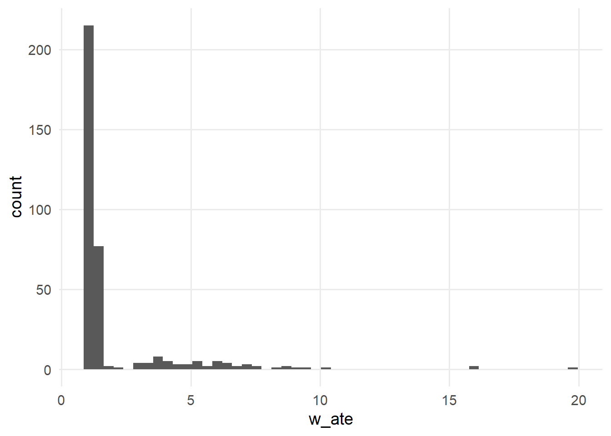
图 64.2 中的许多权重接近 1（ATE 权重的最小可能值），并有一条长尾延伸至最大的权重（约为 24）。 这种分布凸显了 ATE 权重的一个潜在问题。 它们的取值范围是从 1 到无穷大；如果小样本中的权重过大，可能会导致估计值产生偏倚（称为有限样本偏倚）。 我们在 倾向评分 中看到，这些权重会使估计值的方差不稳定，而稳定化可以改善这一点。 然而，ATE 权重还会受到有限样本偏倚影响，而稳定化无法解决这个问题。
我们知道，不考虑混杂因子会使因果估计值产生偏倚，但即使考虑了所有混杂因子，在有限样本中仍可能得到有偏的估计值。 统计学中许多我们常说的性质都依赖于大样本，但“多大”往往并不明确。 让我们看一个简单的模拟。 这里有一个暴露 \(X\)、一个结局 \(Y\) 和一个混杂因子 \(Z\)。 我们将模拟 \(Y\)（它仅依赖于 \(Z\)，因此实际处理效应为 0）以及 \(X\)（它同样依赖于 \(Z\)）。
set.seed(928)
n <- 100
finite_sample <- tibble(
# z is normally distributed with a mean: 0 and sd: 1
z = rnorm(n),
# x is defined from a probit selection model with normally distributed errors
x = case_when(
0.5 + z + rnorm(n) > 0 ~ 1,
TRUE ~ 0
),
# y is continuous, dependent only on z with normally distributed errors
y = z + rnorm(n)
)如果我们使用混杂因子 \(Z\) 拟合倾向评分模型并计算加权估计量，就应该得到一个无偏结果（在本例中应为 0）。
## fit the propensity score model
finite_sample_wts <- glm(
x ~ z,
data = finite_sample,
family = binomial("probit")
) |>
augment(data = finite_sample, type.predict = "response") |>
mutate(wts = wt_ate(.fitted, x))
finite_sample_wts |>
summarize(
effect = sum(y * x * wts) /
sum(x * wts) -
sum(y * (1 - x) * wts) / sum((1 - x) * wts)
)# A tibble: 1 x 1
effect
<dbl>
1 0.197\(X\) 与 0 相差较大，不过很难判断这是偏倚，还是仅仅是这个模拟样本中偶然出现的结果。 让我们在不同样本量下多次重新运行这一模拟，以探究有限样本偏倚的可能性，并绘制结果。
sim <- function(n) {
## create a simulated dataset
finite_sample <- tibble(
z = rnorm(n),
x = case_when(
0.5 + z + rnorm(n) > 0 ~ 1,
TRUE ~ 0
),
y = z + rnorm(n)
)
finite_sample_wts <- glm(
x ~ z,
data = finite_sample,
family = binomial("probit")
) |>
augment(data = finite_sample, type.predict = "response") |>
mutate(wts = wt_ate(.fitted, x))
bias <- finite_sample_wts |>
summarize(
effect = sum(y * x * wts) /
sum(x * wts) -
sum(y * (1 - x) * wts) / sum((1 - x) * wts)
) |>
pull()
tibble(
n = n,
bias = bias
)
}
## Examine 5 different sample sizes, simulate each 1000 times
set.seed(1)
finite_sample_sims <- map_df(
rep(
c(50, 100, 500, 1000, 5000, 10000),
each = 1000
),
sim
)
bias <- finite_sample_sims |>
group_by(n) |>
summarize(bias = mean(bias))
ggplot(bias, aes(x = n, y = bias)) +
geom_point() +
geom_line() +
geom_hline(yintercept = 0, lty = 2)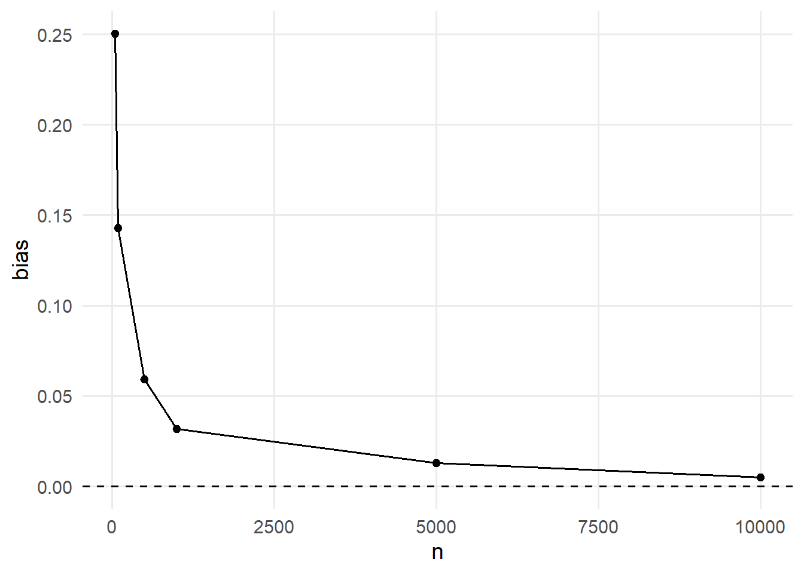
即使样本量很大（5,000），我们仍然会看到偏离“真实”效应 0 的某些偏倚。 直到样本量超过 10,000 后，我们才看到这种偏倚消失。
利用无界权重（即理论上可以大到无穷）的估计目标更容易受到有限样本偏倚影响。 陷入有限样本偏倚的可能性取决于：
(1) 你选择的估计目标（即权重是否有界？）
(2) 暴露组和未暴露组中协变量的分布（即重叠是否良好？ 潜在的正值性违反发生在重叠较差的区域，此时权重可能变得过大）
(3) 样本量。
逆概率加权创建了一个伪总体，其中观测值（希望）在混杂因子上达到平衡。 这个伪总体不同于原始样本总体，因此尝试理解它是有帮助的（既有助于诊断，也有助于交流）。 {gtsummary} 包允许创建加权表格，这可以帮助我们建立对权重所创建伪总体的直觉。 首先，我们必须加载 {survey} 包并创建一个调查设计对象。 {survey} 包支持使用权重计算统计量和拟合模型。 从历史上看，许多研究者已经应用了将权重纳入调查分析的技术。 尽管我们并不是在做调查分析，但同样的技术对倾向评分权重很有帮助。
library(survey)
library(halfmoon)
hdr <- paste0(
"**{level}** \n",
"N = {n_unweighted}; ESS = {format(n, digits = 1, nsmall = 1)}"
)
seven_dwarfs_svy <- svydesign(
# ~1 tells survey we don't have clustered data
ids = ~1,
data = seven_dwarfs_wts,
weights = ~w_ate
)
tbl_svysummary(
seven_dwarfs_svy,
by = park_extra_magic_morning,
include = c(park_ticket_season, park_close, park_temperature_high)
) |>
# give us the *effective sample size* for the groups
add_ess_header(header = hdr) |>
add_overall(last = TRUE)| Characteristic | No Magic Hours N = 294; ESS = 291.31 |
Extra Magic Hours N = 60; ESS = 46.71 |
Overall N = 7111 |
|---|---|---|---|
| Ticket Season | |||
| peak | 78 (22%) | 81 (23%) | 160 (22%) |
| regular | 193 (54%) | 187 (52%) | 380 (53%) |
| value | 83 (23%) | 89 (25%) | 172 (24%) |
| Close Time | |||
| 16:30:00 | 2 (0.4%) | 0 (0%) | 2 (0.2%) |
| 18:00:00 | 50 (14%) | 72 (20%) | 122 (17%) |
| 20:00:00 | 20 (5.6%) | 19 (5.3%) | 39 (5.5%) |
| 21:00:00 | 31 (8.7%) | 0 (0%) | 31 (4.3%) |
| 22:00:00 | 108 (30%) | 86 (24%) | 193 (27%) |
| 23:00:00 | 95 (27%) | 81 (23%) | 176 (25%) |
| 24:00:00 | 48 (14%) | 94 (26%) | 142 (20%) |
| 25:00:00 | 1 (0.3%) | 6 (1.6%) | 7 (1.0%) |
| Historic High Temperature | 84 (78, 89) | 83 (78, 87) | 84 (78, 88) |
| Abbreviation: ESS = Effective Sample Size | |||
| 1 n (%); Median (Q1, Q3) | |||
注意 表 64.2 中的变量在两组之间更加平衡。 例如，查看 表 64.1 中的 park_ticket_season 变量，可以看到早晨有 Extra Magic Hours 的日期中，旺季所占比例（30%）高于早晨没有 Extra Magic Hours 的日期（23%）。 在 表 64.2 中，这一比例达到平衡：有 Extra Magic Morning 组和没有 Extra Magic Morning 组的加权旺季日期比例均为 22%。 权重通过对每个观测值加权来改变变量分布，使两组看起来达到平衡。 另外请注意，表 64.2 中的变量分布现在与 表 64.1 的 Overall 列一致。 ATE 权重正是这样做的：让倾向评分中包含的变量在各暴露组中的分布看起来像整个样本的总体分布。
让我们考察一个镜像直方图，这是帮助理解 ATE 权重创建的加权伪总体的另一种可视化方式。 我们将在图的上半部分绘制暴露组日期（早晨有 Extra Magic Hours 的日期）的倾向评分分布；然后在图的下半部分镜像绘制未暴露组日期的倾向评分分布。 这个可视化让我们可以快速比较两个分布。 随后，我们将叠加加权直方图，以展示纳入权重后这些分布如何变化。 正如在 评估你的倾向评分模型 中所见，{halfmoon} 包包含一个 geom_mirror_histogram() 函数，可以帮助完成这种可视化。
library(halfmoon)
ggplot(seven_dwarfs_wts, aes(.fitted, group = park_extra_magic_morning)) +
geom_mirror_histogram(bins = 50) +
geom_mirror_histogram(
aes(fill = park_extra_magic_morning, weight = w_ate),
bins = 50,
alpha = 0.5
) +
scale_y_continuous(labels = abs) +
labs(
x = "propensity score",
fill = "Extra Magic Morning"
)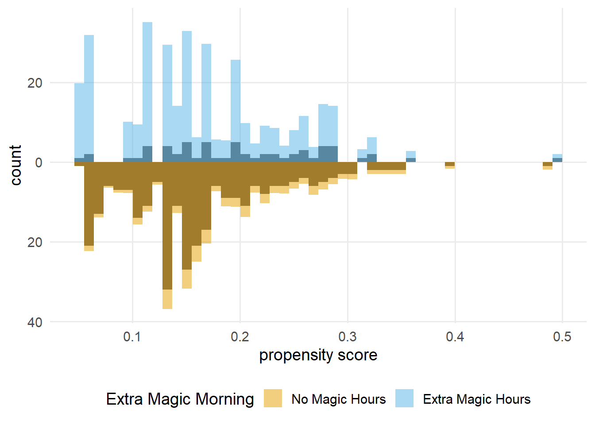
我们可以从 图 64.4 中了解到几点。 首先，可以看到观测总体中未暴露日期（即早晨没有 Extra Magic Hours 的日期）多于暴露日期。 这一点可以通过查看较深色的直方图来判断，它们显示的是观测样本中的分布。 同样，暴露日期被赋予了更大的权重，这从顶部看到的浅蓝色可以看出。 我们还可以看到，加权后两个分布变得相似；顶部蓝色加权分布的形状与下方橙色加权分布的形状相近。
回顾一下，我们的估计目标是：
\[ E[Y(1) - Y(0)] \]
要使用数据估计潜在结局的平均值，我们需要满足 因果假设 中讨论的三个因果假设：可交换性、正值性和一致性。 这个估计目标还告诉我们，需要对数据的哪一部分作出这些假设。 ATE 是一个针对整个总体的估计目标。 因此，我们需要在处理取值的整个范围内满足这些假设；我们需要使用处理组来估计未处理组的反事实，并使用未处理组来估计处理组的反事实。 因为需要从两组相互借用信息，正值性假设的一个方面是：接受暴露的概率应大于 0 且小于 1：\(0<p<1\)。
另一个我们见过的估计目标——MatchIt 中的默认估计目标——是处理组平均处理效应（ATT）。 ATT 的目标人群是暴露（处理）组。 这一因果估计目标以暴露组中的个体为条件：
\[ E[Y(1) - Y(0) | X = 1] \]
ATT 受到关注时，示例研究问题可以是“是否应停止针对当前正在接受营销活动的人群开展该活动？” 或者：“医疗服务提供者是否应停止向当前正在接受治疗的人推荐该治疗？” (Greifer 和 Stuart 2021)
ATT 是匹配时常见的目标估计目标；这里，所有暴露观测值都会被纳入，并与对照观测值匹配，其中一部分对照观测值可能会被丢弃。 或者，我们可以通过加权估计 ATT。 ATT 权重估计为：
\[ w_{ATT} = X + \frac{(1 - X)p}{1 - p} \]
换句话说，处理组的权重为 1，而未处理组的权重等于其接受处理的优势比。 为什么这些权重能够将目标对准这一人群？ 另一种写法是将这些权重表示为 ATE 权重的一种变换。 ATE 与 ATT 权重的差异仅在于分子。 权重的分子有时称为倾斜函数。 ATE 权重的倾斜函数是 1，而 ATT 的倾斜函数是接受处理的概率。 如果我们将 ATE 权重乘以 1，什么都没有改变；我们仍然处理的是整个总体。 如果将 ATE 权重乘以处理概率，就会对权重进行缩放，使其现在针对处理组。
\[ \begin{aligned} w_i^{\mathrm{ATE}} &= \begin{cases} \dfrac{1}{p}, & X_i = 1,\\[8pt] \dfrac{1}{1 - p}, & X_i = 0, \end{cases} \quad \Bigl(tilt_{\rm ATE}(p)=1\Bigr) \\[1em] w_i^{\mathrm{ATT}} &= \begin{cases} \dfrac{p}{p} = 1, & X_i = 1,\\[6pt] \dfrac{p}{1 - p}, & X_i = 0, \end{cases} \quad \Bigl(tilt_{\rm ATT}(p)=p\Bigr) \end{aligned} \]
倾斜函数有助于我们理解如何修改权重以针对给定人群，以及权重如何变化。 例如，对于 ATE，倾斜函数使目标人群保持原样（整个总体），而权重可以趋于无穷大（处理组向左、未处理组向右），如 图 64.5 所示。
ps <- seq(0.01, 0.99, by = 0.01)
df <- tibble(ps = ps) |>
mutate(
h_ate = 1,
h_att = ps,
h_atc = 1 - ps,
h_ato = ps * (1 - ps),
h_atm = pmin(ps, 1 - ps),
w1_ate = h_ate / ps,
w0_ate = h_ate / (1 - ps),
w1_att = h_att / ps,
w0_att = h_att / (1 - ps),
w1_atc = h_atc / ps,
w0_atc = h_atc / (1 - ps),
w1_ato = h_ato / ps,
w0_ato = h_ato / (1 - ps),
w1_atm = h_atm / ps,
w0_atm = h_atm / (1 - ps)
)
plot_df <- bind_rows(
df |>
select(ps, starts_with("h_")) |>
pivot_longer(
-ps,
names_to = "estimand",
names_prefix = "h_",
values_to = "value"
) |>
mutate(panel = "tilting"),
df |>
select(ps, starts_with("w0_")) |>
pivot_longer(
-ps,
names_to = "estimand",
names_prefix = "w0_",
values_to = "value"
) |>
mutate(panel = "control"),
df |>
select(ps, starts_with("w1_")) |>
pivot_longer(
-ps,
names_to = "estimand",
names_prefix = "w1_",
values_to = "value"
) |>
mutate(panel = "treated")
) |>
mutate(
panel = factor(
panel,
levels = c("tilting", "control", "treated"),
labels = c(
"tilting function",
"weights (untreated)",
"weights (treated)"
)
)
)
plot_weight_properties <- function(plot_df, estimand_type) {
plot_df |>
filter(estimand == estimand_type) |>
ggplot(aes(ps, value)) +
geom_line() +
facet_wrap(~panel, ncol = 1, scales = "free_y") +
labs(
x = "propensity score",
y = NULL
) +
theme_minimal() +
xlim(0.01, 0.99) +
expand_limits(y = c(0, 1))
}
plot_weight_properties(plot_df, "ate")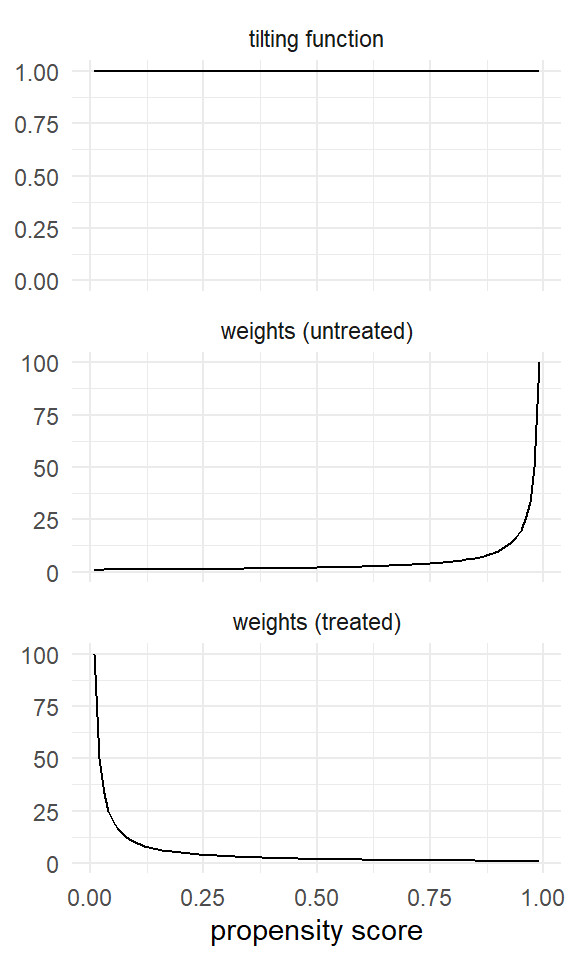
对于 ATT，倾斜函数试图使总体更接近处理组；未处理组的权重是接受处理的优势比，其范围与 ATE 一样为 0 到无穷大，但处理组本来就与处理组相似，因此其权重为 1（图 64.6）。
plot_weight_properties(plot_df, "att")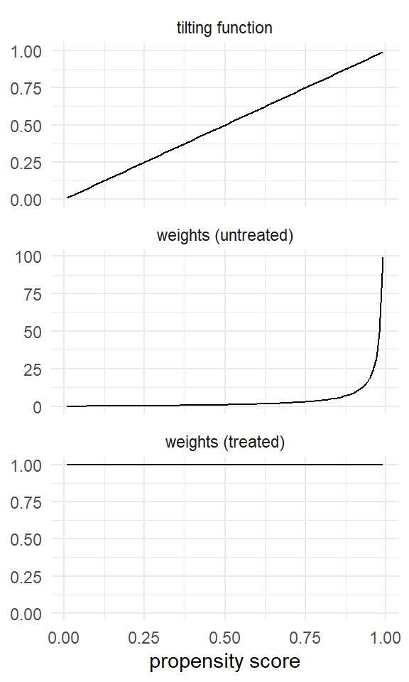
让我们将 ATT 权重添加到 seven_dwarfs_wts 数据框中，并查看它们的分布。
seven_dwarfs_wts <- seven_dwarfs_wts |>
mutate(w_att = wt_att(.fitted, park_extra_magic_morning))
ggplot(seven_dwarfs_wts, aes(w_att)) +
geom_histogram(bins = 50)Warning in vec_ptype2.psw.double(x = x, y = y, x_arg = x_arg, y_arg = y_arg, : Converting psw to numeric
i Class-specific attributes and metadata have been
dropped
i Use explicit casting to numeric to avoid this
warning
Converting psw to numeric
i Class-specific attributes and metadata have been
dropped
i Use explicit casting to numeric to avoid this
warning与 ATE 权重相比，图 64.7 中的权重看起来更加稳定；其分布没有明显偏斜，范围也较小，从 0 到略高于 1，其中许多权重恰好为 1。 对于暴露组中的所有日期，这些权重都正好为 1。 从理论上讲，未暴露日期的这些权重范围可以从 0 到无穷大。 不过，我们往往会看到 ATT 权重更加稳定且彼此相近。 由于这个特定样本中未暴露日期远多于暴露日期，范围要小得多，这意味着绝大多数未暴露日期都会被降低权重，以匹配暴露日期的变量分布。 这种稳定性也符合直觉：未处理组的权重是接受处理的优势比。 要使这些权重非常高，接受处理的优势比也必须非常高，而这种情况在未处理组中当然少得多。 让我们查看加权表格，以更清楚地理解所创建的伪总体。
seven_dwarfs_svy <- svydesign(
ids = ~1,
data = seven_dwarfs_wts,
weights = ~w_att
)
tbl_svysummary(
seven_dwarfs_svy,
by = park_extra_magic_morning,
include = c(park_ticket_season, park_close, park_temperature_high)
) |>
add_ess_header(header = hdr) |>
add_overall(last = TRUE)| Characteristic | No Magic Hours N = 294; ESS = 223.11 |
Extra Magic Hours N = 60; ESS = 60.01 |
Overall N = 1201 |
|---|---|---|---|
| Ticket Season | |||
| peak | 18 (30%) | 18 (30%) | 36 (30%) |
| regular | 35 (58%) | 35 (58%) | 70 (58%) |
| value | 7 (12%) | 7 (12%) | 14 (12%) |
| Close Time | |||
| 16:30:00 | 1 (0.9%) | 0 (0%) | 1 (0.4%) |
| 18:00:00 | 13 (21%) | 18 (30%) | 31 (26%) |
| 20:00:00 | 2 (3.3%) | 2 (3.3%) | 4 (3.3%) |
| 21:00:00 | 3 (4.6%) | 0 (0%) | 3 (2.3%) |
| 22:00:00 | 17 (28%) | 11 (18%) | 28 (23%) |
| 23:00:00 | 17 (28%) | 11 (18%) | 28 (23%) |
| 24:00:00 | 8 (14%) | 17 (28%) | 25 (21%) |
| 25:00:00 | 0 (0.3%) | 1 (1.7%) | 1 (1.0%) |
| Historic High Temperature | 83 (74, 88) | 83 (75, 87) | 83 (75, 88) |
| Abbreviation: ESS = Effective Sample Size | |||
| 1 n (%); Median (Q1, Q3) | |||
我们再次实现了组间平衡，但 表 64.3 中的目标值与前面的表格不同。 回顾我们的 ATE 加权表格（表 64.2），查看 wdw_ticket_season 变量时，可以看到旺季中加权百分比约为 22%，与观测样本中旺季日期的总体比例相平衡。 暴露组和未暴露组中旺季日期的加权百分比均为 30%，反映了未加权暴露组中的比例。 如果将 表 64.3 与未加权表格（表 64.1）比较，你可能会注意到，其中的列与未加权表格中的暴露列最为相似。 这是因为目标人群是暴露组，即早晨有 Extra Magic Hours 的日期，所以我们试图让比较组（没有魔法时段）尽可能与该组相似。
我们同样可以创建镜像直方图来观察加权伪总体。
ggplot(seven_dwarfs_wts, aes(.fitted, group = park_extra_magic_morning)) +
geom_mirror_histogram(bins = 50) +
geom_mirror_histogram(
aes(fill = park_extra_magic_morning, weight = w_att),
bins = 50,
alpha = 0.5
) +
scale_y_continuous(labels = abs) +
labs(
x = "propensity score",
fill = "Extra Magic Morning"
)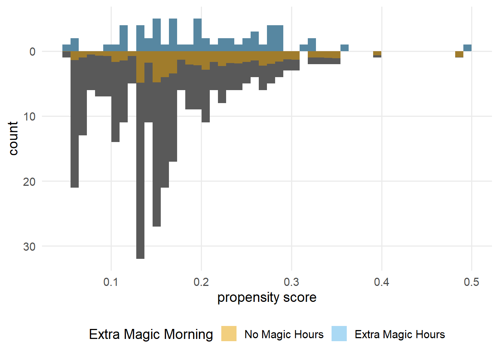
由于暴露组中的每一天权重都是 1，图 64.8 中倾向评分的分布（图中零点上方的深色柱）与叠加的蓝色加权分布完全重合。 在未暴露总体中，几乎所有观测值都被降低权重；深橙色分布比倾向评分分布更小，并且与上方的暴露组分布更加接近。 与暴露组相比，未暴露组的观测值多得多时，ATT 更容易估计。
ATT 和其他估计目标相较于 ATE 具有一个优势：因为我们只针对总体中的一个子集进行推断，需要作出的因果假设只需在该子集内满足。 由于 ATT 的估计目标是：
\[ E[Y(1) - Y(0) | X = 1] \]
我们的假设更弱，因为它只适用于处理组，而不是整个总体。 对于可交换性，我们不再试图为未处理组估计潜在结局 y(1)；我们只对处理组进行推断，并且已经观察到该组的 y(1)。 我们只需要估计 y(0)，并借用未处理组的信息来完成这一点。 这会对我们的假设产生两个后果：1）可交换性假设被弱化为只针对潜在结局 y(0)；2）正值性假设被弱化为只要求 \(p<1\)；现在我们只要求存在某种不接受暴露的概率。
用于估计未暴露（对照）人群中的平均处理效应（ATU / ATC）的目标人群，是未暴露（对照）人群。 我们将使用 ATU 和 ATC 来指代这一估计目标。 该因果估计目标以未暴露组中的个体为条件。
\[ E[Y(1) - Y(0) | X = 0] \]
ATU 所关注的研究问题示例包括：“是否应当向目前尚未接受营销活动的人群发送我们的营销活动？” 或者：“医疗服务提供者是否应当开始向目前尚未接受治疗的人推荐该治疗？” (Greifer 和 Stuart 2021)
ATU 也可以通过匹配进行估计；在这种情况下，所有未暴露观测值都会被纳入，并与暴露观测值进行匹配，其中一部分暴露观测值可能会被丢弃。 或者，也可以通过加权估计 ATU。 ATU 权重估计为：
\[ w_{ATU} = \frac{X(1-p)}{p}+ (1-X) \]
这与 ATT 正好相反：未暴露组的权重为 1，而暴露组的权重等于其未接受处理的优势比。 我们使用未接受处理的概率作为倾斜函数，将目标对准未处理组。
\[ \begin{aligned} w_i^{\mathrm{ATC}} &= \begin{cases} \dfrac{1 - p}{p}, & X_i = 1,\\[6pt] \dfrac{1 - p}{1 - p} = 1, & X_i = 0, \end{cases} \quad \Bigl(tilt_{\rm ATC}(p)=1 - p\Bigr) \end{aligned} \]
ATC 的倾斜函数会使总体更接近未处理组。 因此，未处理组的权重为 1，处理组的权重根据未接受处理的优势比确定，其范围从 0 到无穷大。
plot_weight_properties(plot_df, "atc")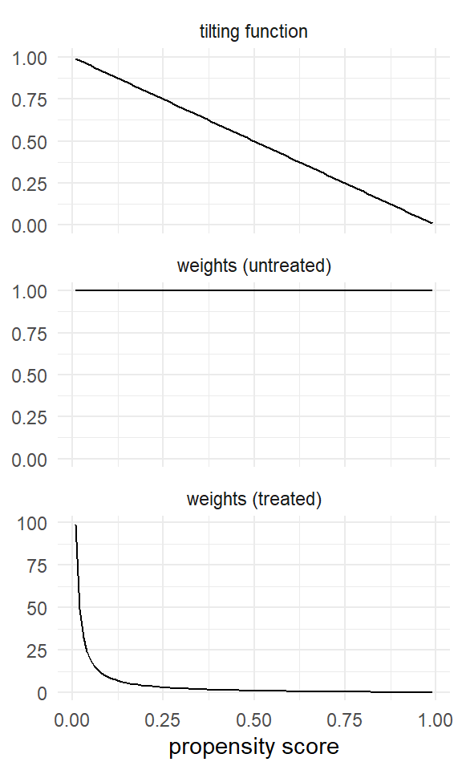
让我们将 ATU 权重添加到 seven_dwarfs_wts 数据框中，并查看它们的分布。
seven_dwarfs_wts <- seven_dwarfs_wts |>
mutate(w_atu = wt_atu(.fitted, park_extra_magic_morning))
ggplot(seven_dwarfs_wts, aes(w_atu)) +
geom_histogram(bins = 50)Warning in vec_ptype2.psw.double(x = x, y = y, x_arg = x_arg, y_arg = y_arg, : Converting psw to numeric
i Class-specific attributes and metadata have been
dropped
i Use explicit casting to numeric to avoid this
warning
Converting psw to numeric
i Class-specific attributes and metadata have been
dropped
i Use explicit casting to numeric to avoid this
warning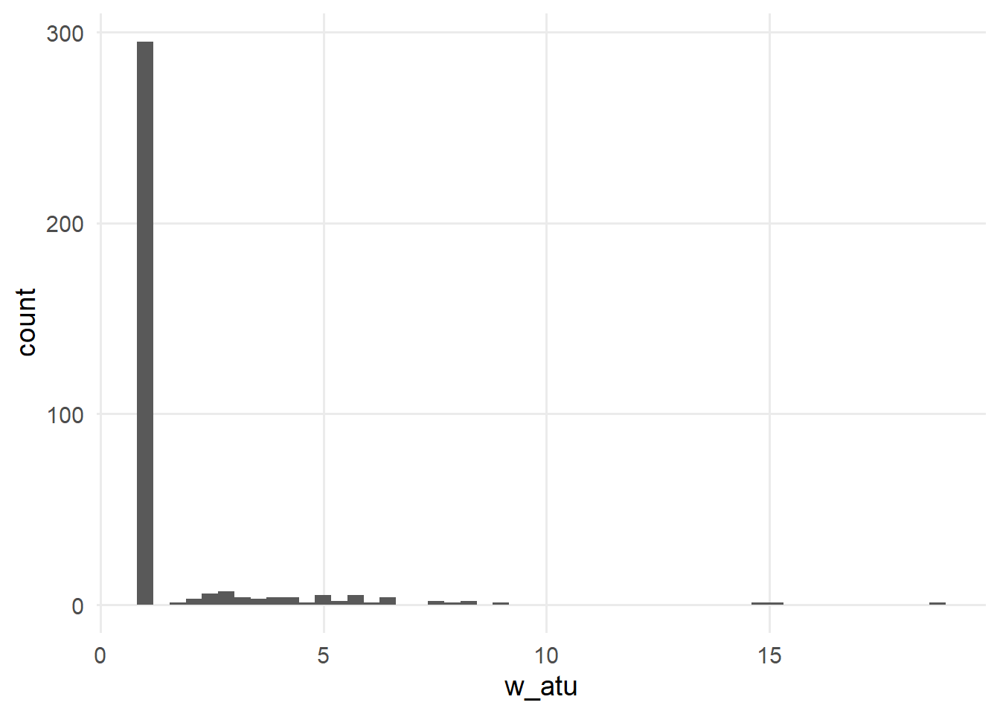
图 64.10 中权重的分布与 ATE 权重的分布非常相似：有几个权重在 1 附近，并带有一条长尾。 未暴露组中的所有观测值权重都为 1；暴露组的权重范围可以从 0 到无穷大。 由于未暴露组的观测值更多，我们提高暴露观测值的权重，使其分布与未暴露组相匹配。
现在，让我们查看加权表格。
seven_dwarfs_svy <- svydesign(
ids = ~1,
data = seven_dwarfs_wts,
weights = ~w_atu
)
tbl_svysummary(
seven_dwarfs_svy,
by = park_extra_magic_morning,
include = c(park_ticket_season, park_close, park_temperature_high)
) |>
add_ess_header(header = hdr) |>
add_overall(last = TRUE)| Characteristic | No Magic Hours N = 294; ESS = 294.01 |
Extra Magic Hours N = 60; ESS = 42.51 |
Overall N = 5911 |
|---|---|---|---|
| Ticket Season | |||
| peak | 60 (20%) | 63 (21%) | 123 (21%) |
| regular | 158 (54%) | 152 (51%) | 310 (52%) |
| value | 76 (26%) | 82 (27%) | 158 (27%) |
| Close Time | |||
| 16:30:00 | 1 (0.3%) | 0 (0%) | 1 (0.2%) |
| 18:00:00 | 37 (13%) | 54 (18%) | 91 (15%) |
| 20:00:00 | 18 (6.1%) | 17 (5.7%) | 35 (5.9%) |
| 21:00:00 | 28 (9.5%) | 0 (0%) | 28 (4.7%) |
| 22:00:00 | 91 (31%) | 75 (25%) | 166 (28%) |
| 23:00:00 | 78 (27%) | 70 (23%) | 148 (25%) |
| 24:00:00 | 40 (14%) | 77 (26%) | 117 (20%) |
| 25:00:00 | 1 (0.3%) | 5 (1.6%) | 6 (1.0%) |
| Historic High Temperature | 84 (78, 89) | 83 (78, 87) | 84 (78, 88) |
| Abbreviation: ESS = Effective Sample Size | |||
| 1 n (%); Median (Q1, Q3) | |||
现在，表 64.4 中的暴露列经过加权后，与未加权表格中的未暴露列相匹配。
我们还可以创建镜像直方图，以观察加权伪总体。
ggplot(seven_dwarfs_wts, aes(.fitted, group = park_extra_magic_morning)) +
geom_mirror_histogram(bins = 50) +
geom_mirror_histogram(
aes(fill = park_extra_magic_morning, weight = w_atu),
bins = 50,
alpha = 0.5
) +
scale_y_continuous(labels = abs) +
labs(
x = "propensity score",
fill = "Extra Magic Morning"
)未暴露日期的权重都为 1，因此该组倾向评分的分布与橙色的加权伪总体完全重合。 蓝色柱表示暴露总体被大幅提高权重，以匹配未暴露组的分布。
与 ATT 一样，我们的估计目标以处理状态为条件。 对于 ATC，我们将因果假设弱化为只需对未处理组成立。 对于未暴露组，我们已经观察到 y(0)，因此只需要为他们估计 y(1)。 这意味着，在存在未暴露观测值的任何位置，都需要有一些暴露观测值。 换句话说，现在的正值性假设是 \(0 > p\)：需要存在某种接受处理的概率。
用于估计可均匀匹配人群中的平均处理效应（ATM）的目标人群，是可均匀匹配人群。 该因果估计目标以根据某种距离度量被认定为“可均匀匹配”的个体为条件。
\[ E[Y(1) - Y(0) | M_d = 1] \]
这里，\(d\) 表示距离度量，\(M_d=1\) 表示某个单位根据该距离度量可以均匀匹配 (Samuels 2017; D’Agostino McGowan 2018)。 关于 ATM 的研究问题示例包括：“处于临床均势的人是否应接受该暴露？” (Greifer 和 Stuart 2021) 在医学中，处于临床均势是指我们确实不确定应当如何为其选择治疗方案的人。 这往往正是我们希望作出推断的人群，因为我们希望在这种不确定性面前作出最佳决策。
ATM 是匹配时常用的目标估计目标。 在这里，一些暴露观测值会与对照观测值匹配。 不过，两组中都可能有一些观测值被丢弃。 这种匹配通常通过卡钳完成：只有当观测值之间的距离落在预先规定的卡钳范围内时，才进行匹配，正如我们在 匹配 中所展示的。 或者，也可以通过加权估计 ATM。 ATM 权重估计为：
\[ w_{ATM} = \frac{\min \{p, 1-p\}}{Xp + (1-X)(1-p)} \]
ATM 的倾斜函数为 \(min\{p, 1-p\}\)。
\[ \begin{aligned} w_i^{\mathrm{ATM}} &= \begin{cases} \dfrac{min \{p, 1-p\}}{p}, & X_i = 1,\\[6pt] \dfrac{min \{p, 1-p\}}{1 - p}, & X_i = 0, \end{cases} \quad \Bigl(tilt_{\rm ATM}(p)=min \{p, 1-p\}\Bigr) \end{aligned} \]
这会对权重产生有趣的影响。 倾斜函数以三角函数的形式缩放权重：在 0.5 处取最大值，此时处理组之间的不确定性（均势）最大。 当概率高于 0.5 时，未处理组的权重为 1；但随着其概率趋近于 0，权重会降低。 接受处理概率较低的个体不会贡献太多信息。 对于处理组，情况正好相反。 当概率低于 0.5 时，处理组的权重为 1；随着概率趋近于 1，权重会降低。
plot_weight_properties(plot_df, "atm")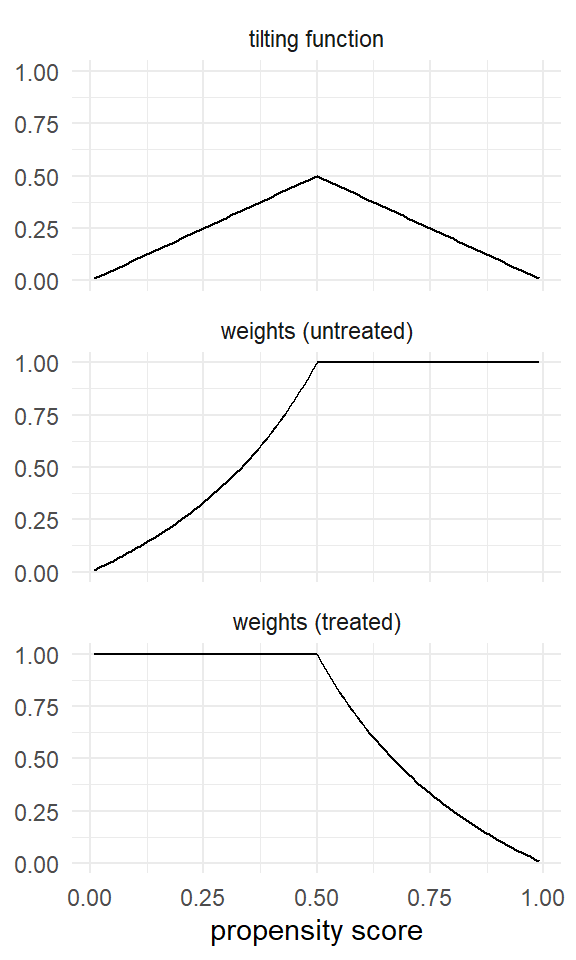
让我们将 ATM 权重添加到 seven_dwarfs_wts 数据框中，并查看它们的分布。
seven_dwarfs_wts <- seven_dwarfs_wts |>
mutate(w_atm = wt_atm(.fitted, park_extra_magic_morning))
ggplot(seven_dwarfs_wts, aes(w_atm)) +
geom_histogram(bins = 50)Warning in vec_ptype2.psw.double(x = x, y = y, x_arg = x_arg, y_arg = y_arg, : Converting psw to numeric
i Class-specific attributes and metadata have been
dropped
i Use explicit casting to numeric to avoid this
warning
Converting psw to numeric
i Class-specific attributes and metadata have been
dropped
i Use explicit casting to numeric to avoid this
warning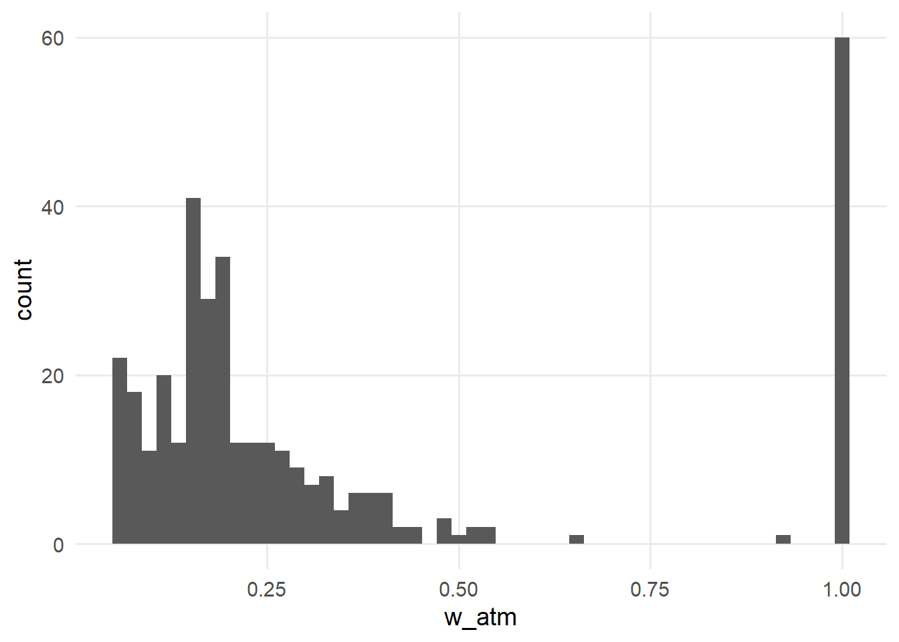
图 64.13 中权重的分布与 ATT 权重的分布非常相似。 这是因为，在这个特定样本中，未暴露观测值远多于暴露观测值。 这些权重有一个很好的性质：取值范围为 0 到 1，因此无论暴露组之间的不平衡程度如何，它们都始终稳定。
现在，让我们查看加权表格。
seven_dwarfs_svy <- svydesign(
ids = ~1,
data = seven_dwarfs_wts,
weights = ~w_atm
)
tbl_svysummary(
seven_dwarfs_svy,
by = park_extra_magic_morning,
include = c(park_ticket_season, park_close, park_temperature_high)
) |>
add_ess_header(header = hdr) |>
add_overall(last = TRUE)| Characteristic | No Magic Hours N = 294; ESS = 223.11 |
Extra Magic Hours N = 60; ESS = 60.01 |
Overall N = 1201 |
|---|---|---|---|
| Ticket Season | |||
| peak | 18 (30%) | 18 (30%) | 36 (30%) |
| regular | 35 (58%) | 35 (58%) | 70 (58%) |
| value | 7 (12%) | 7 (12%) | 14 (12%) |
| Close Time | |||
| 16:30:00 | 1 (0.9%) | 0 (0%) | 1 (0.4%) |
| 18:00:00 | 13 (21%) | 18 (30%) | 31 (26%) |
| 20:00:00 | 2 (3.3%) | 2 (3.3%) | 4 (3.3%) |
| 21:00:00 | 3 (4.6%) | 0 (0%) | 3 (2.3%) |
| 22:00:00 | 17 (28%) | 11 (18%) | 28 (23%) |
| 23:00:00 | 17 (28%) | 11 (18%) | 28 (23%) |
| 24:00:00 | 8 (14%) | 17 (28%) | 25 (21%) |
| 25:00:00 | 0 (0.3%) | 1 (1.7%) | 1 (1.0%) |
| Historic High Temperature | 83 (74, 88) | 83 (75, 87) | 83 (75, 88) |
| Abbreviation: ESS = Effective Sample Size | |||
| 1 n (%); Median (Q1, Q3) | |||
在这个特定样本中，ATM 权重与 ATT 权重相似，因此该表格看起来也与 ATT 加权表格相似。 这种相似性并无保证，ATM 伪总体可能与总体、暴露组和未暴露组的未加权人群都不同。 因此，使用 ATM 权重时，必须检查加权表格，以了解最终将针对哪个人群作出推断。
我们还可以创建镜像直方图，以观察 ATM 加权伪总体。
ggplot(seven_dwarfs_wts, aes(.fitted, group = park_extra_magic_morning)) +
geom_mirror_histogram(bins = 50) +
geom_mirror_histogram(
aes(fill = park_extra_magic_morning, weight = w_atm),
bins = 50,
alpha = 0.5
) +
scale_y_continuous(labels = abs) +
labs(
x = "propensity score",
fill = "Extra Magic Morning"
)
由于 ATM 权重被限制在 0 和 1 之间，所有观测值的权重都会降低。 这消除了小样本中大权重导致有限样本偏倚的可能性，并且具有更好的方差性质。
ATM 的因果假设也有所弱化：我们对 ATM 采用与 ATE 相同的可交换性和正值性假设；不过，这些假设只需对可均匀匹配人群成立，而不需要对重叠区域中没有相应支持的个体成立。 这通常更可行，原因很简单：倾向评分中间区域的混杂程度不那么严重，而且按照定义，我们在这里具有更好的正值性。
ATM 估计的是一个处于均势的特定人群（可均匀匹配人群），但我们可以用多种方式理解均势。 一个相关的目标人群是重叠人群中的平均处理效应（ATO）。 ATO 所关注的研究问题与 ATM 相同，例如：“处于临床均势的人是否应接受该暴露？” (Greifer 和 Stuart 2021)
同样，这些权重与 ATM 权重相似，但经过了轻微衰减，因此具有更好的方差性质。
ATO 权重估计为：
\[ w_{ATO} = X(1-p) + (1-X)p \]
ATO 的倾斜函数为 \(p(1-p)\)1。
\[ \begin{aligned} w_i^{\mathrm{ATO}} &= \begin{cases} \dfrac{p(1-p)}{p} = 1-p, & X_i = 1,\\[6pt] \dfrac{p(1-p)}{1 - p} = p, & X_i = 0, \end{cases} \quad \Bigl(tilt_{\rm ATO}(p)=p(1-p)\Bigr) \end{aligned} \]
与 ATM 一样，ATO 的倾斜函数最重视倾向评分为 0.5 的个体，并降低倾向评分接近 0 或 1 的个体的权重。 不过，ATO 的倾斜函数比 ATM 更平滑，因此具有更好的方差性质。 对权重的影响是：权重在整个倾向评分范围内呈线性变化；随着倾向评分趋近于 1，未处理组的权重趋近于 1；相反，随着倾向评分趋近于 0，处理组的权重趋近于 1。 我们为每个组赋予等于其属于另一组概率的权重！
plot_weight_properties(plot_df, "ato")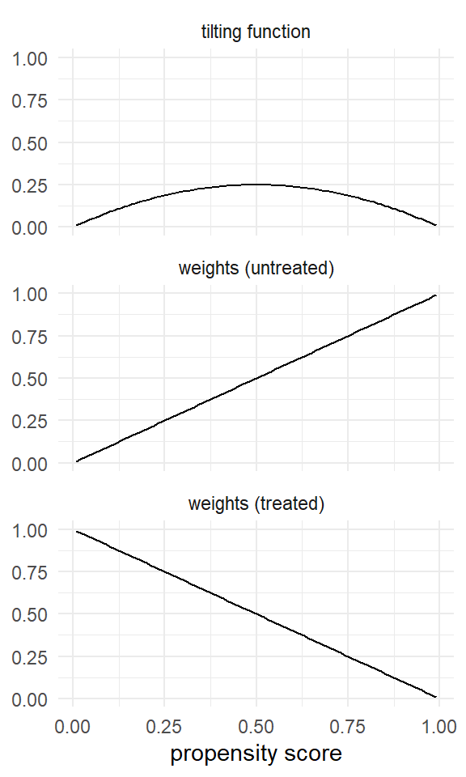
让我们将 ATO 权重添加到 seven_dwarfs_wts 数据框中，并查看它们的分布。
seven_dwarfs_wts <- seven_dwarfs_wts |>
mutate(w_ato = wt_ato(.fitted, park_extra_magic_morning))
ggplot(seven_dwarfs_wts, aes(w_ato)) +
geom_histogram(bins = 50)Warning in vec_ptype2.psw.double(x = x, y = y, x_arg = x_arg, y_arg = y_arg, : Converting psw to numeric
i Class-specific attributes and metadata have been
dropped
i Use explicit casting to numeric to avoid this
warning
Converting psw to numeric
i Class-specific attributes and metadata have been
dropped
i Use explicit casting to numeric to avoid this
warning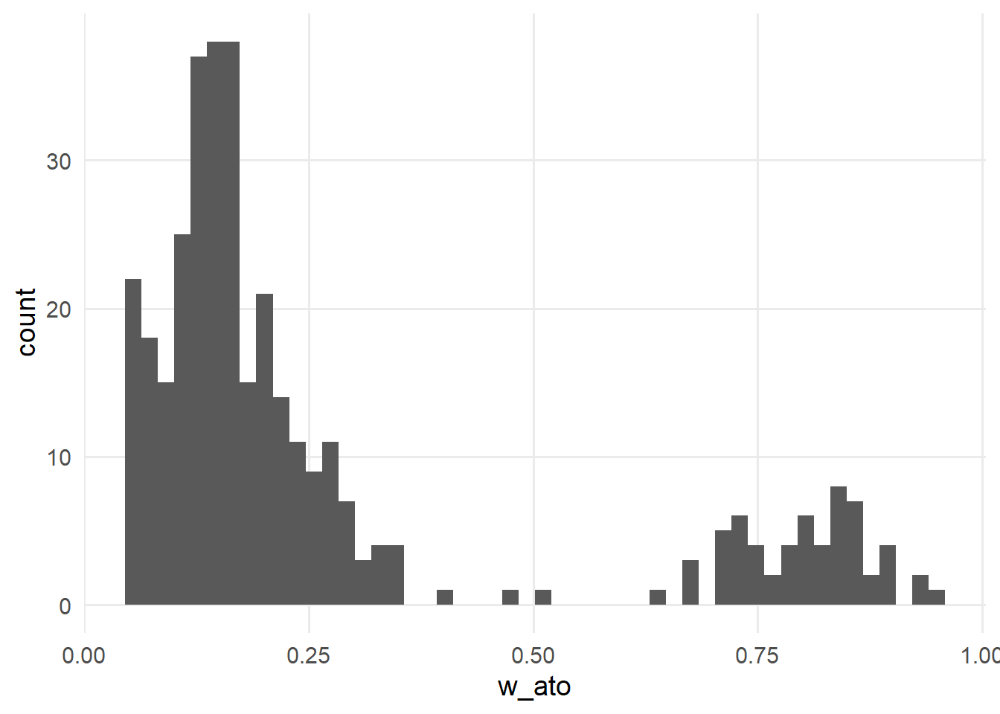
与 ATM 权重一样，ATO 权重被限制在 0 到 1 之间，因此无论暴露组和未暴露组之间有多么不平衡，它们都比 ATE、ATT 和 ATU 更稳定。
让我们重新考察有限样本偏倚模拟，加入 ATO 权重，以检验这种潜在偏倚是否会影响它们。
sim <- function(n) {
## create a simulated dataset
finite_sample <- tibble(
z = rnorm(n),
x = case_when(
0.5 + z + rnorm(n) > 0 ~ 1,
TRUE ~ 0
),
y = z + rnorm(n)
)
finite_sample_wts <- glm(
x ~ z,
data = finite_sample,
family = binomial("probit")
) |>
augment(data = finite_sample, type.predict = "response") |>
mutate(
wts_ate = wt_ate(.fitted, x),
wts_ato = wt_ato(.fitted, x)
)
bias <- finite_sample_wts |>
summarize(
effect_ate = sum(y * x * wts_ate) /
sum(x * wts_ate) -
sum(y * (1 - x) * wts_ate) / sum((1 - x) * wts_ate),
effect_ato = sum(y * x * wts_ato) /
sum(x * wts_ato) -
sum(y * (1 - x) * wts_ato) / sum((1 - x) * wts_ato)
)
tibble(
n = n,
bias = c(bias$effect_ate, bias$effect_ato),
weight = c("ATE", "ATO")
)
}
## Examine 5 different sample sizes, simulate each 1000 times
set.seed(1)
finite_sample_sims <- map_df(
rep(
c(50, 100, 500, 1000, 5000, 10000),
each = 1000
),
sim
)
bias <- finite_sample_sims |>
group_by(n, weight) |>
summarize(bias = mean(bias))
ggplot(bias, aes(x = n, y = bias, color = weight)) +
geom_point() +
geom_line() +
geom_hline(yintercept = 0, lty = 2)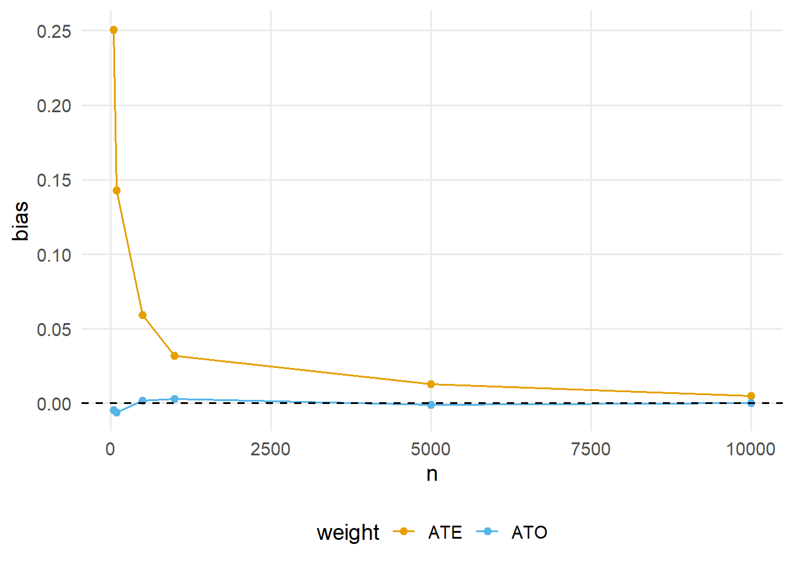
注意，即使在相对较小的样本中，ATO 权重估计值也几乎立即变得无偏。
现在，让我们查看加权表格。
seven_dwarfs_svy <- svydesign(
ids = ~1,
data = seven_dwarfs_wts,
weights = ~w_ato
)
tbl_svysummary(
seven_dwarfs_svy,
by = park_extra_magic_morning,
include = c(park_ticket_season, park_close, park_temperature_high)
) |>
add_ess_header(header = hdr) |>
add_overall(last = TRUE)| Characteristic | No Magic Hours N = 294; ESS = 246.21 |
Extra Magic Hours N = 60; ESS = 59.41 |
Overall N = 961 |
|---|---|---|---|
| Ticket Season | |||
| peak | 14 (29%) | 14 (29%) | 28 (29%) |
| regular | 28 (58%) | 28 (58%) | 55 (58%) |
| value | 6 (13%) | 6 (13%) | 13 (13%) |
| Close Time | |||
| 16:30:00 | 0 (0.7%) | 0 (0%) | 0 (0.4%) |
| 18:00:00 | 9 (19%) | 13 (27%) | 22 (23%) |
| 20:00:00 | 2 (3.7%) | 2 (3.7%) | 4 (3.7%) |
| 21:00:00 | 2 (5.1%) | 0 (0%) | 2 (2.5%) |
| 22:00:00 | 14 (29%) | 9 (20%) | 23 (24%) |
| 23:00:00 | 14 (28%) | 9 (19%) | 23 (24%) |
| 24:00:00 | 7 (14%) | 14 (29%) | 21 (22%) |
| 25:00:00 | 0 (0.3%) | 1 (1.7%) | 1 (1.0%) |
| Historic High Temperature | 83 (75, 88) | 83 (76, 87) | 83 (75, 88) |
| Abbreviation: ESS = Effective Sample Size | |||
| 1 n (%); Median (Q1, Q3) | |||
与 ATM 权重一样，ATO 伪总体可能与总体、暴露组或未暴露组的未加权人群不同，因此必须检查这些加权表格，以了解将针对哪个人群作出推断。
我们还可以创建镜像直方图，以观察 ATO 加权伪总体。
ggplot(seven_dwarfs_wts, aes(.fitted, group = park_extra_magic_morning)) +
geom_mirror_histogram(bins = 50) +
geom_mirror_histogram(
aes(fill = park_extra_magic_morning, weight = w_ato),
bins = 50,
alpha = 0.5
) +
scale_y_continuous(labels = abs) +
labs(
x = "propensity score",
fill = "Extra Magic Morning"
)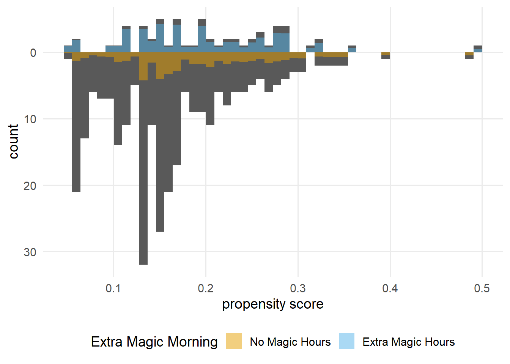
图 64.18 与 ATM 伪总体相似，但有轻微衰减，这从暴露总体中更明显的降权可以看出。 当目标是重叠人群（或可均匀匹配人群）时，我们更倾向于使用 ATO 权重，因为它们具有更好的方差性质。 另一个好处是，倾向评分模型中包含的任何变量（如果使用逻辑回归2拟合）都会在均值上实现完美平衡。 让我们查看 Love 图。 在 图 64.19 中，使用 ATO 权重时，三个协变量的 SMD 都为 0。
seven_dwarfs_wts |>
mutate(park_close = as.numeric(park_close)) |>
tidy_smd(
.vars = c(park_ticket_season, park_close, park_temperature_high),
.group = park_extra_magic_morning,
.wts = w_ato
) |>
ggplot(aes(abs(smd), variable, color = method, group = method)) +
geom_love()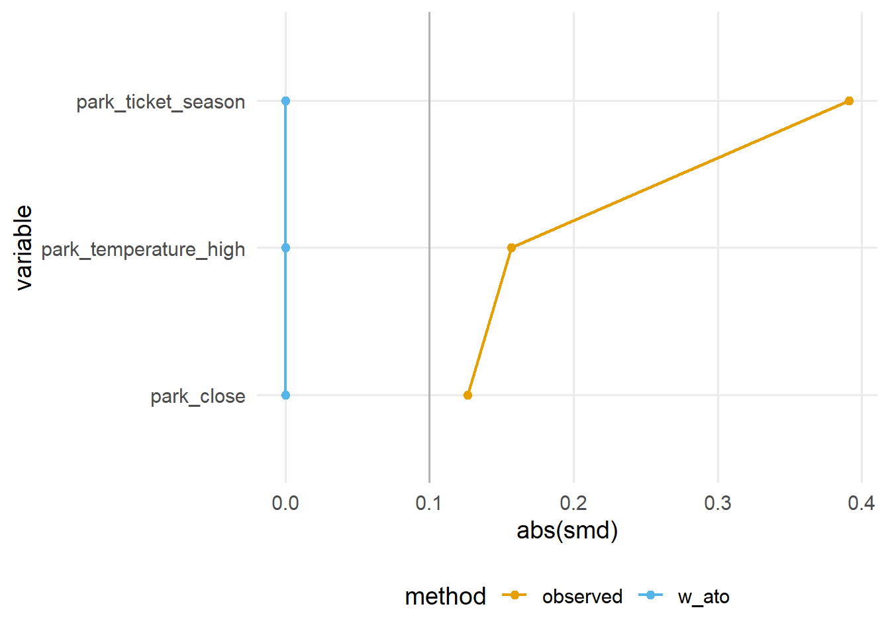
正如我们在 加权 中所见，截尾或截断是处理正值性和重叠问题的常用技术。 你可以把由此得到的估计目标看作另一类重叠人群。 例如，对于被截尾的观测值，倾斜函数为 0；对于保留下来的观测值，倾斜函数为 1。 许多分析者希望这样做仍然是在近似 ATE——即这个目标人群与总体足够接近，能够给出大致相同的答案，同时具有更好的方差。 不过，我们也知道，重叠人群本身就是一个有价值的目标人群。 考察截尾或截断时各人群之间的变化，可能有助于了解你的目标人群在多大程度上近似整个总体，或者它是否更适合被视为重叠人群。
MatchIt 可以通过 estimand 参数轻松针对不同的估计目标。 请注意，ATE 需要使用完全匹配，而 ATM 需要使用卡钳。
| 估计目标 | MatchIt 命令 |
|---|---|
| ATE | matchit(…, method = "full", estimand = "ATE") |
| ATT | matchit(…, estimand = "ATT") |
| ATC | matchit(…, estimand = "ATC") |
| ATM | matchit(…, caliper = <caliper>) |
权重如何针对不同人群的直觉，归根结底在于倾斜函数：我们缩放权重，使其代表感兴趣的人群。 匹配的直觉更直接：关键在于哪些观测值会被丢弃，哪些不会。 从数学上说，两者是相同的：在匹配中，每个人的权重都是 0 或 1，而这些权重的确定方式与一种算法倾斜函数有关。 不过，对于匹配而言，思考谁被丢弃以及为什么被丢弃更容易。
请考虑 图 64.20，其中展示了一个以 ATE、ATT、ATC 和 ATM 为目标的模拟示例。 对于 ATE，我们在整个总体中寻找匹配对象。 对于 ATT，我们为处理组寻找匹配对象；因此，如果某个未处理（对照）观测值落在处理组的范围之外，它可能会被丢弃。 ATC 则相反：我们为对照组寻找匹配对象，因此，与未处理组没有重叠的处理观测值可能会被丢弃。 对于 ATM，我们关注的是两组之间存在重叠的人群；因此，如果某个组中的观测值找不到良好匹配，它就可能被丢弃。 在匹配中，我们通过卡钳控制认为可接受的重叠程度。
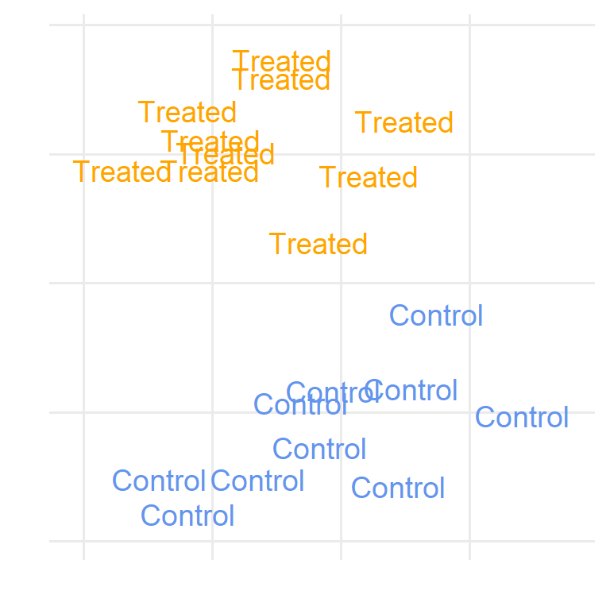
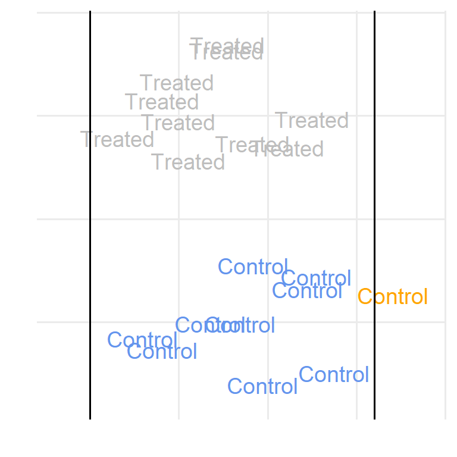
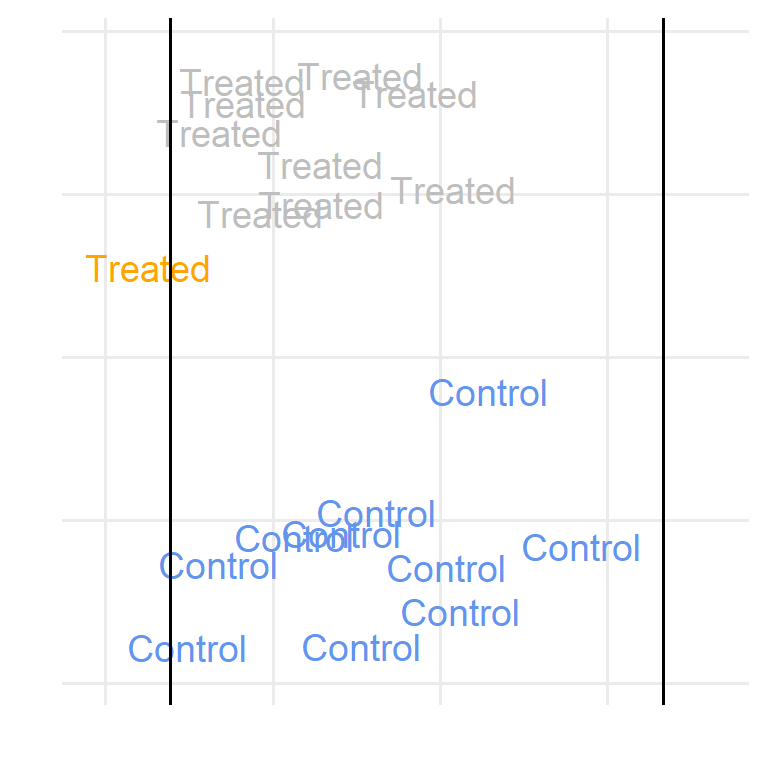
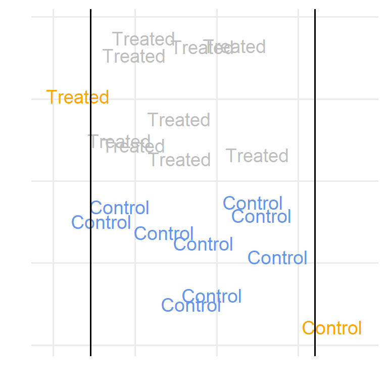
进行匹配时，我们会把总体限制在存在匹配的区域。 这意味着不需要使用加权表格来描述我们将据此作出推断的人群。 不过，假设你正在探索多种匹配方案。 在这种情况下，使用 bind_matches() 在原始数据集中记录每种匹配方案的（0 或 1）权重会很有帮助，这样就不必复制多份数据。 随后，你可以使用相应的二元权重创建加权表格。
为给定分析选择估计目标时，需要考虑几个因素。 首先当然是研究问题本身。 不同估计目标回答不同的问题；理想情况下，我们会选择与问题相匹配的估计目标。 例如，假设 Disney 想评估是否应在没有 Extra Magic Hours 的日期增加额外的 Extra Magic Hours；在这里，ATU 将是所关注的估计目标。 我们还需要考虑根据可用样本量以及暴露和未暴露观测值的分布来回答具体问题的可行性（例如，有限样本偏倚是否可能成为问题？）。 由于 ATE 之外的其他估计目标会弱化因果假设，在给定数据下，它们可能是更实际的目标。
下面的表格总结了各个估计目标及其估计方法（包括 R 函数），并列出从 Greifer 和 Stuart (2021) 的表 2 扩展而来的示例问题。
| 估计目标 | 目标人群 | 示例研究问题 | 匹配方法 | 加权方法 |
|---|---|---|---|---|
| ATE | 总体人群 | 是否应在所有早晨安排 Extra Magic Hours，以改变下午 5–6 点之间 Seven Dwarfs Mine Train 的等待时间？ | 完全匹配 | ATE 权重 | 是否应将某项具体政策应用于所有符合条件的观测值？ | 精细分层 | wt_ate() | matchit(…, estimand = "ATE") | |
||
| ATT | 暴露（处理）观测值 | 是否应停止 Extra Magic Hours，以改变下午 5–6 点之间 Seven Dwarfs Mine Train 的等待时间？ | 不设卡钳的成对匹配 | ATT 权重 | 是否应停止面向当前正在接受营销活动者的营销活动？ | 完全匹配 | wt_att() | 医疗服务提供者是否应停止向当前正在接受治疗的人推荐该治疗？ | 精细分层 | | | matchit(…, estimand = "ATT") | |
||
| ATU | 未暴露（对照）观测值 | 是否应在所有日期增加 Extra Magic Hours，以改变下午 5–6 点之间 Seven Dwarfs Mine Train 的等待时间？ | 不设卡钳的成对匹配 | ATU 权重 | 是否应将营销活动扩展至目前尚未接受该活动的人群？ | 完全匹配 | wt_atu() | 医疗服务提供者是否应向目前尚未接受治疗的人扩展治疗？ | 精细分层 | | | matchit(…, estimand = "ATC") | |
||
| ATM | 可均匀匹配 | 是否有一些日期应改变 Extra Magic Hours 的提供状态，以改变下午 5–6 点之间 Seven Dwarfs Mine Train 的等待时间？ | 卡钳匹配 | ATM 权重 | 对某些观测值而言，暴露是否存在效应？ | matchit(…, caliper = 0.1) | wt_atm() | 处于临床均势的人是否应接受处理？ | 粗化精确匹配 | | | 基数匹配 | | matchit(…, method = "cardinality") | |
||
| ATO | 重叠人群 | 与 ATM 相同 | | ATO 权重 | | | wt_ato() |
||
正如 评估你的倾向评分模型 所述，有效样本量（ESS）是理解各种估计值效率的一种方式。它衡量需要多少个相互独立的观测，才能达到与你的加权样本相同的方差。ESS既可作为检查所选方法和估计过程效率的一般工具，也可在有多种方法都能回答研究问题时，帮助选择方法。
当有多个权重集或匹配方案可以回答你的研究问题时，比较它们各自的ESS有助于决定使用哪一个。在其他条件相同的情况下，应选择ESS最高的方案。{halfmoon} 中的 ess() 和 plot_ess() 可以帮助完成这一工作。在 图 64.21 中可以看到，ATE和ATU权重的ESS远低于其他权重；其余权重彼此相对接近，其中ATO权重的ESS最高。
library(halfmoon)
seven_dwarfs_wts |>
plot_ess(.weights = starts_with("w_"))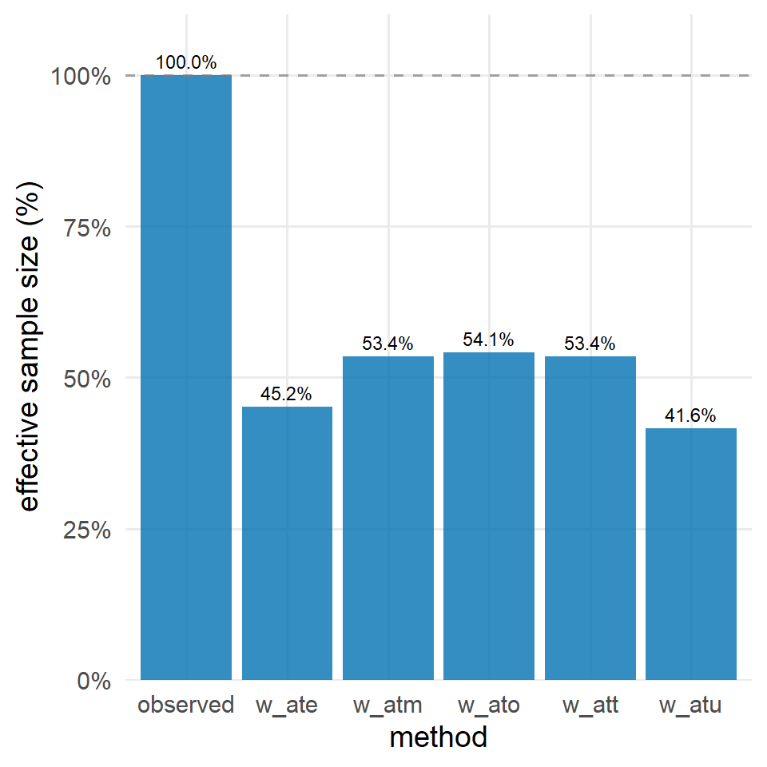
在考察平衡性与精确度时，根本的矛盾在于偏差—方差权衡。观测样本量最高，但平衡性也最差，而且可能无法回答我们的研究问题。ATO具有最好的平衡性和最高的ESS，但它所对应的是一类特定的研究问题，未必适合我们的需求。假如我们对暴露进行了随机化，至少在平均意义上、并且实际样本量足够大时，我们会得到最好的平衡性和最高的ESS。然而，在观察性数据中，我们往往必须在偏差和方差之间作出权衡。加权会降低有效样本量，但这通常是必要的权衡：否则，我们得到的可能只是一个估计得很精确的错误答案！
在 从问题到答案：分层与结局模型 中，我们讨论了多变量线性回归等标准方法何时有效、何时失效。但是，像 lm(outcome ~ exposure + confounder) 这样的回归估计量估计的是什么估计目标？
在探索简单问题时，你会注意到，多变量回归得到的答案通常接近使用ATE权重得到的答案。如果暴露组之间的分布表现为处理组或未处理组所占比例明显偏高，那么这个答案可能更接近ATT或ATU。
现实是，我们并不总能明确知道自己处理的是哪一种估计目标。一种探究方法是使用一种技术，从线性回归中推导出隐含权重 (Chattopadhyay 和 Zubizarreta 2022; Aronow 和 Samii 2015)。{lmw} 包可以帮助我们计算这些权重。默认目标是ATE，但我们也可以针对其他估计目标。
library(lmw)
implied_weights <- lmw(
~ park_extra_magic_morning +
park_ticket_season +
park_close +
park_temperature_high,
data = seven_dwarfs_with_ps,
treat = "park_extra_magic_morning"
)
seven_dwarfs_with_ps$iw <- implied_weights$weights这些隐含权重具有一些不错的性质。它们在均值上实现了完美平衡，并且在这类权重中方差最低。
seven_dwarfs_with_ps |>
mutate(park_close = as.numeric(park_close)) |>
tidy_smd(
.vars = c(park_ticket_season, park_close, park_temperature_high),
.group = park_extra_magic_morning,
.wts = iw
) |>
ggplot(aes(abs(smd), variable, color = method, group = method)) +
geom_love()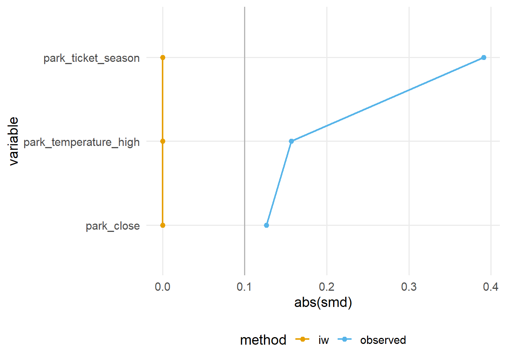
它们的均值也为1，这意味着它们的总和等于原始数据集的大小。相对于观测样本量，有效样本量也很高。
seven_dwarfs_with_ps |>
summarize(mean = mean(iw), sum = sum(iw), n = n(), ess = ess(iw))# A tibble: 1 x 4
mean sum n ess
<dbl> <dbl> <int> <dbl>
1 1 354 354 305.问题在于，它们也具有一些不协调的性质。尽管它们在均值上实现平衡，却未必能为目标人群创造平衡。与此相关的是，它们有时还会产生负权重。例如，如果我们在这个模型中加入交互项，有些权重会小于0。负权重意味着超出了数据中协变量联合分布范围的外推。虽然这里的负权重接近0，但它们可能会更加极端。因此，尽管我们针对的是ATE，却未必能非常精确地实现这一目标；目标人群究竟是谁也不再清楚。
implied_weights_int <- lmw(
~ park_extra_magic_morning *
(park_ticket_season + park_close + park_temperature_high),
data = seven_dwarfs_with_ps,
treat = "park_extra_magic_morning"
)
min(implied_weights_int$weights)[1] -0.1113假设你认为这些性质在你的问题中表现得还可以。在这种情况下，这种方法还提供了一个额外好处：现在，你可以使用 倾向评分 和 评估你的倾向评分模型 中的技术，在不查看结局与暴露之间关系的情况下，诊断多变量线性模型的平衡性和函数形式。由于它们只是权重，你仍然可以使用 halfmoon、gtsummary 以及任何其他适合处理权重的方法所提供的全部工具。lmw 甚至自带一个方便的估计函数 lmw_est()，可以用稳健标准误计算结局上的效应。因此，如果你的合作者希望使用OLS，而你又想批判性地考虑平衡性和外推问题，就可以兼得两方面的好处。不过，如果最终得到负权重和其他奇怪的性质，根据你的估计目标，采用另一种方法可能更好。
我们将在?sec-g-comp讨论如何使用类似这样的多变量结局模型来针对不同的估计目标。